3.5 Solutions to Exercises
3.5.1 Exercice 1: Nottingham average monthly temperature and Hong Kong monthly exports
- Fit a SARIMA model on the Nottingham average monthly temperature dataset
nottemand obtain predictions for the three subsequent years. - Fit a SARIMA model to the latter, this time including seasonal dummies as regressors
- Compare the forecasts from both models
- Import the dataset
hk_trade_m.csvand try fitting a suitable SARIMA model to the exports (on the log scale). Contrast the forecasts for different models with their complexity as described by the number of components. What do you notice? Plot the forecasted values on the original scale of the data after back-transforming.
# Nottingham monthly air temperature
library(forecast)
plot(nottem)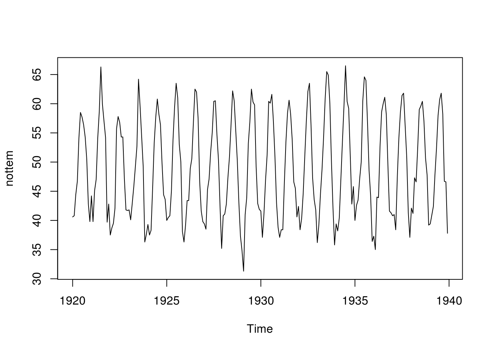
not_sar <- Arima(nottem, order = c(1, 0, 0), seasonal = c(2, 1, 0))
not_month <- c((time(nottem) * 12)%%12)
xreg <- sapply(0:11, function(i) {
not_month == i
})
not_reg <- Arima(nottem, order = c(1, 0, 0), seasonal = c(1, 0, 0), xreg = xreg,
include.mean = FALSE) #remove mean, otherwise collinear
plot(forecast(not_sar, h = 36), ylab = "Average monthly temperatures at Nottingham (F)",
bty = "l", xlab = "Time")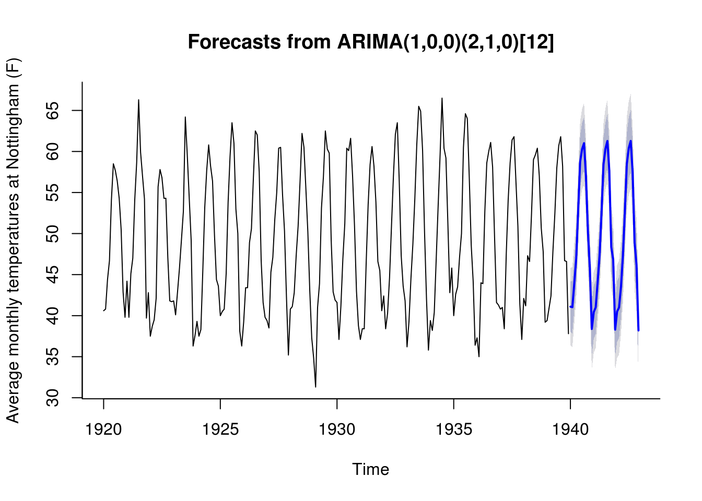
plot(forecast(not_reg, h = 36, xreg = xreg[1:36, ]), ylab = "Average monthly temperatures at Nottingham (F)",
bty = "l", xlab = "Time")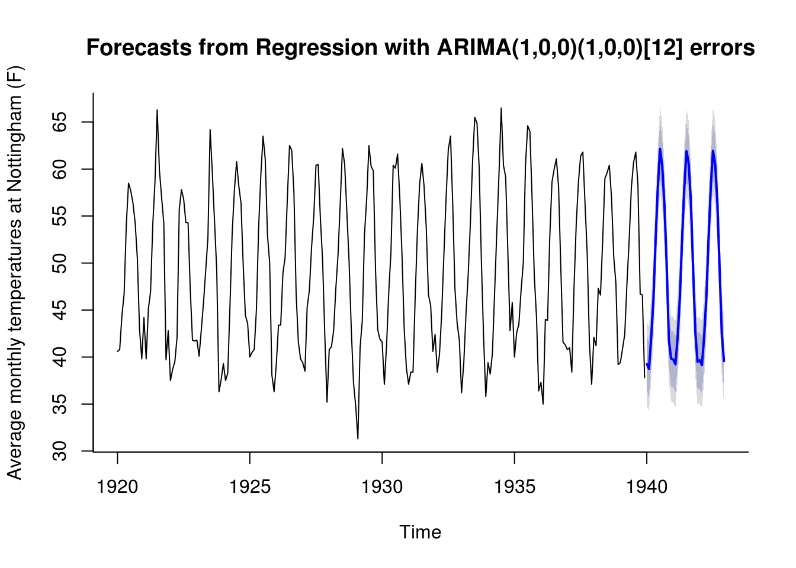
# Hong Kong trade - code and analysis from Prof. David A. Stephens
HKTrade <- read.csv("http://sma.epfl.ch/~lbelzile/math342/hk_trade_m.csv", header = FALSE)
library(forecast)
HK.Exports <- ts(HKTrade[, 2], start = c(1980, 1), freq = 12)
HK.Imports <- ts(HKTrade[, 3], start = c(1980, 1), freq = 12)
par(mfrow = c(2, 2), oma = c(0, 0, 2, 0))
plot(log(HK.Exports), main = "Hong Kong Exports (log scale)")
plot(diff(log(HK.Exports), 12), main = "Hong Kong Exports (log scale) \n d = 1")
plot(diff(diff(log(HK.Exports), 12), 1), main = "Hong Kong Exports (log scale)\n d = 1 & D = 1, S = 12")
acf(diff(diff(log(HK.Exports), 12), 1), lag.max = 36, ylim = range(-1, 1), main = "1st and seasonal differenced")
title("Hong Kong Exports: Raw and differenced data", outer = TRUE)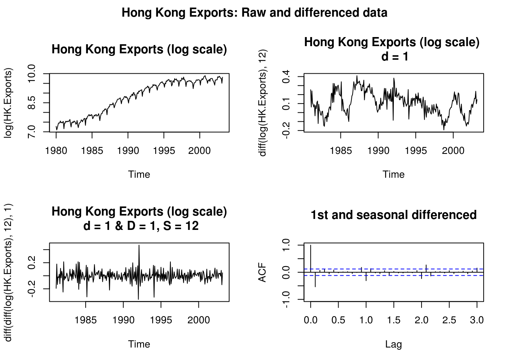
# Differencing for the log-series
TSA::acf(log(HK.Exports), lag.max = 36)
TSA::acf(diff(log(HK.Exports), 1), lag.max = 36)
TSA::acf(diff(log(HK.Exports), 12), lag.max = 36)
TSA::acf(diff(diff(log(HK.Exports), 12), 1), lag.max = 36)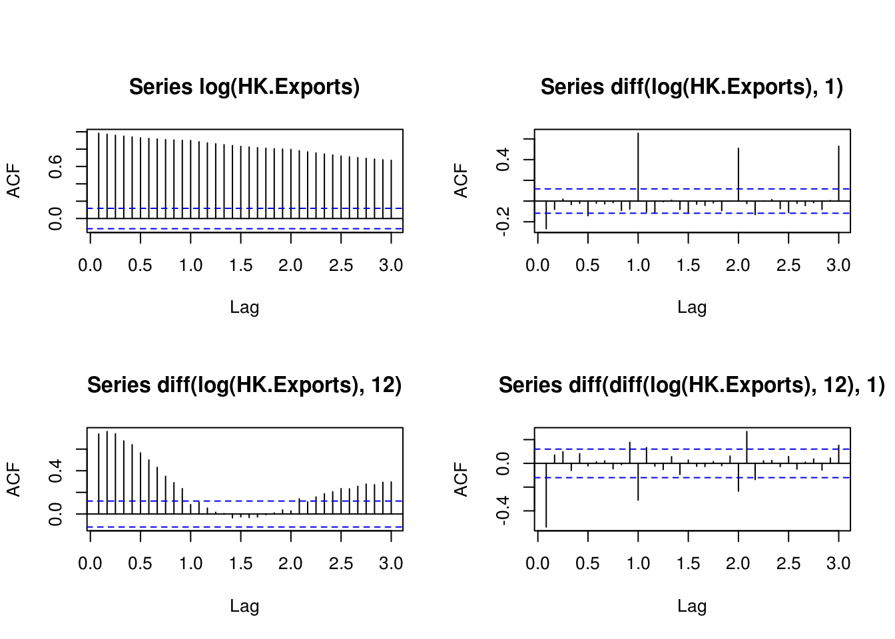
par(mfrow = c(1, 2), oma = c(0, 0, 2, 0))
Yt <- log(HK.Exports)
# Bottom-up modelling with SARIMA models
fit.HK.1 <- Arima(Yt, c(0, 1, 0), seasonal = list(order = c(0, 1, 0), period = 12),
method = "ML")
summary(fit.HK.1)Series: Yt
ARIMA(0,1,0)(0,1,0)[12]
sigma^2 estimated as 0.0081: log likelihood=263.12
AIC=-524.24 AICc=-524.23 BIC=-520.66
Training set error measures:
ME RMSE MAE MPE MAPE
Training set -0.0004542289 0.08787689 0.06156272 -0.008057074 0.7100876
MASE ACF1
Training set 0.458178 -0.5335023TSA::acf(residuals(fit.HK.1), lag.max = 36, main = "SARIMA(0, 1, 0)x(0, 1, 0)[12]")
pacf(residuals(fit.HK.1), lag.max = 36, main = "SARIMA(0, 1, 0)x(0, 1, 0)[12]")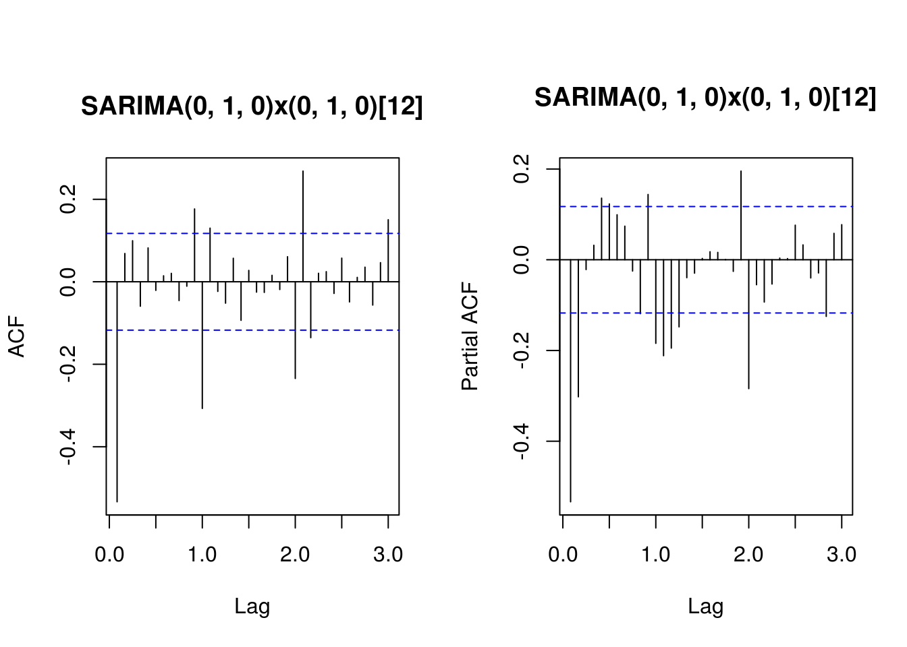
# Remove the remaining seasonality
fit.HK.2 <- Arima(Yt, c(0, 1, 0), seasonal = list(order = c(1, 1, 0), period = 12),
method = "ML")
summary(fit.HK.2)Series: Yt
ARIMA(0,1,0)(1,1,0)[12]
Coefficients:
sar1
-0.3300
s.e. 0.0595
sigma^2 estimated as 0.007259: log likelihood=277.5
AIC=-551 AICc=-550.96 BIC=-543.84
Training set error measures:
ME RMSE MAE MPE MAPE
Training set -0.0006534918 0.08303735 0.05940653 -0.01068992 0.6839377
MASE ACF1
Training set 0.4421306 -0.5417701TSA::acf(residuals(fit.HK.2), lag.max = 36, main = "SARIMA(0, 1, 0)x(1, 1, 0)[12]")
pacf(residuals(fit.HK.2), lag.max = 36, main = "SARIMA(0, 1, 0)x(1, 1, 0)[12]")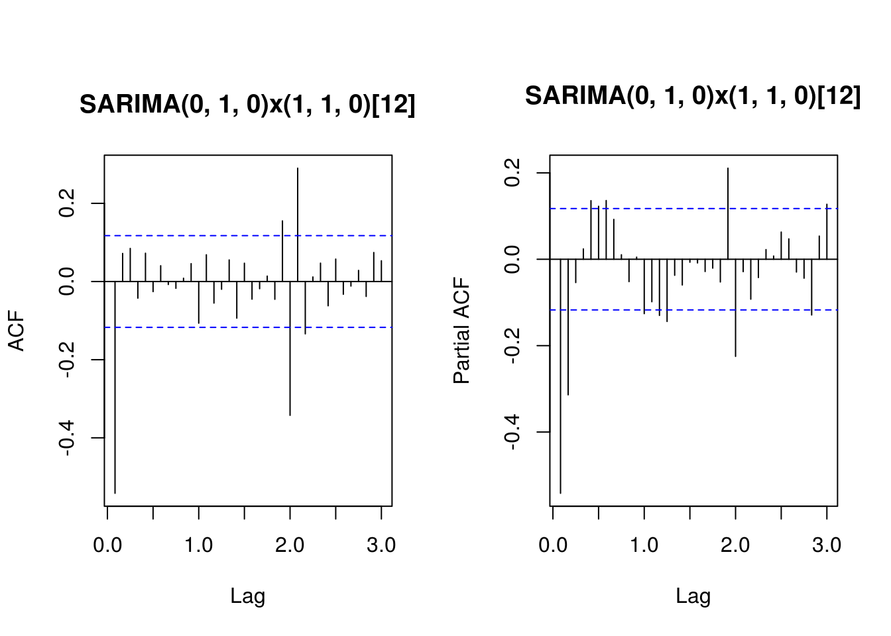
# Remove moving average component at lag 1
fit.HK.3 <- Arima(Yt, c(0, 1, 1), seasonal = list(order = c(1, 1, 0), period = 12),
method = "ML")
summary(fit.HK.3)Series: Yt
ARIMA(0,1,1)(1,1,0)[12]
Coefficients:
ma1 sar1
-0.5726 -0.3698
s.e. 0.0385 0.0585
sigma^2 estimated as 0.004857: log likelihood=331.1
AIC=-656.2 AICc=-656.11 BIC=-645.45
Training set error measures:
ME RMSE MAE MPE MAPE
Training set -0.001208245 0.06778969 0.0518109 -0.01640749 0.5963856
MASE ACF1
Training set 0.3856004 -0.1394624TSA::acf(residuals(fit.HK.3), lag.max = 36, main = "SARIMA(0, 1, 1)x(1, 1, 0)[12]")
pacf(residuals(fit.HK.3), lag.max = 36, main = "SARIMA(0, 1, 1)x(1, 1, 0)[12]")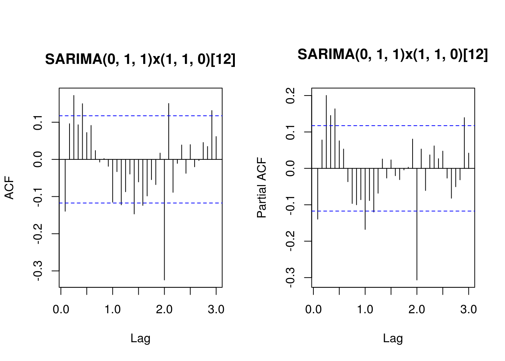
# Remove seasonal component at lag 24
fit.HK.4 <- Arima(Yt, c(0, 1, 1), seasonal = list(order = c(1, 1, 1), period = 12),
method = "ML")
summary(fit.HK.4)Series: Yt
ARIMA(0,1,1)(1,1,1)[12]
Coefficients:
ma1 sar1 sma1
-0.5697 0.2034 -0.8641
s.e. 0.0392 0.0845 0.0621
sigma^2 estimated as 0.003824: log likelihood=358.14
AIC=-708.28 AICc=-708.13 BIC=-693.95
Training set error measures:
ME RMSE MAE MPE MAPE
Training set -0.002437551 0.06003768 0.04482937 -0.02675703 0.5149574
MASE ACF1
Training set 0.3336407 -0.1150611TSA::acf(residuals(fit.HK.4), lag.max = 36, main = "SARIMA(0, 1, 1)x(1, 1, 1)[12]")
pacf(residuals(fit.HK.4), lag.max = 36, main = "SARIMA(0, 1, 1)x(1, 1, 1)[12]")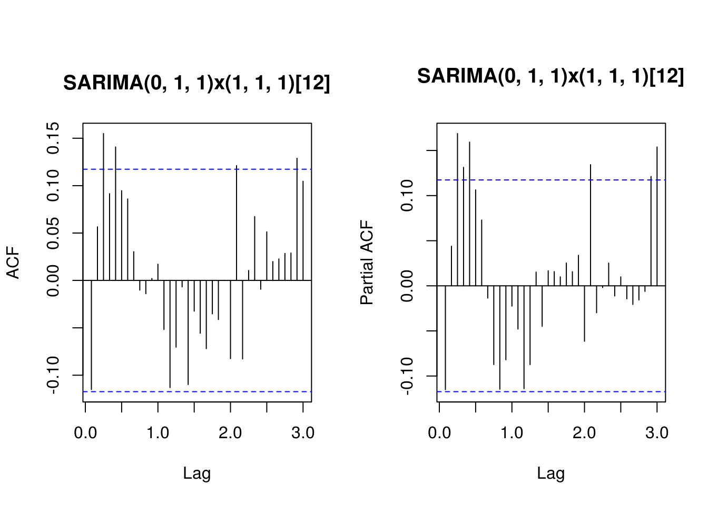
# Limits of the SARIMA model - the trend was not linear there are residual
# features despite differencing little can be done at this stage
par(mfrow = c(2, 2))
plot(forecast(fit.HK.1, h = 36), ylim = range(8, 13), xlim = range(1995:2006))
plot(forecast(fit.HK.2, h = 36), ylim = range(8, 13), xlim = range(1995:2006))
plot(forecast(fit.HK.3, h = 36), ylim = range(8, 13), xlim = range(1995:2006))
plot(forecast(fit.HK.4, h = 36), ylim = range(8, 13), xlim = range(1995:2006))
title("Hong Kong Exports: Forecasts (log scale)", outer = TRUE)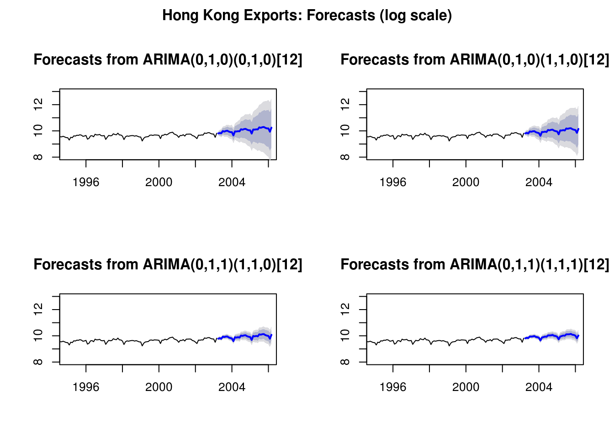
# Forecasts on the original scale
par(mfrow = c(1, 1))
# lambda <- BoxCox.lambda(HK.Exports, method = 'loglik')
fit.HK.4b <- Arima(HK.Exports, c(0, 1, 1), lambda = 0, seasonal = list(order = c(1,
1, 1), period = 12), method = "ML")
plot(forecast(fit.HK.4b, h = 36), include = 120)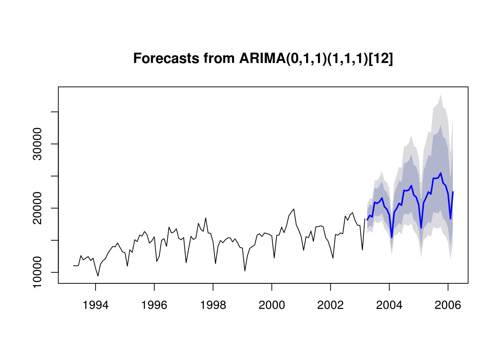
3.5.2 Exercice 2: Lake Erie and Lake Huron levels
- Fit a linear model to the January observations of the Lake Erie data of the form \(y_t=\beta_0+\beta_1t+\varepsilon_t\), ignoring the temporal dependence. Test the null hypothesis that the trend is not significant.
- Use a parametric sieve bootstrap with normal errors to assess the presence of a trend in the Lake Huron dataset. Report your conclusion as a P-value.
- Recall the estimation of the Lake Huron level in Practical 2. There, we saw that fitting an ARMA(2,1) led to a parameter value of \(\theta_1 \approx 1\). Using a parametric bootstrap, test the hypothesis that the parameter \(\theta_1=0\).
# From practical series 2
library(forecast)
lake <- read.csv("http://sma.epfl.ch/~lbelzile/math342/LakeErie.csv", header = TRUE,
stringsAsFactors = FALSE, sep = ";")
lake.ts <- subset(ts(lake[, 2], start = c(1920, 1), frequency = 12), month = 1)
lmfit <- lm(lake.ts ~ scale(time(lake.ts)))
summary(lmfit)$coefficients[2, 3][1] 2.150708# Test statistic, with one sided p-value
2 * pt(summary(lmfit)$coefficients[2, 1]/summary(lmfit)$coefficients[2, 2],
df = lmfit$df.residual, lower.tail = FALSE)[1] 0.03656358p <- 5
fit_lake <- Arima(lake.ts, order = c(p, 0, 0), include.mean = TRUE, include.drift = TRUE)
boot_stat <- function(bts) {
ts_ar <- Arima(bts, order = c(p, 0, 0), include.mean = TRUE, include.drift = TRUE)
ts_ar$coef["drift"]
}
# Check normality assumption and residual dependence
qqnorm(scale(resid(fit_lake)))
abline(a = 0, b = 1)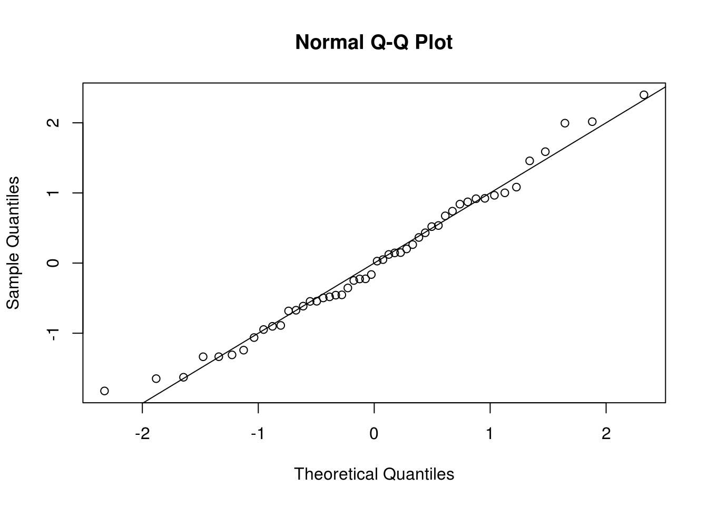
par(mfrow = c(1, 2))
TSA::acf(resid(fit_lake), main = "Residuals of AR(p)")
pacf(resid(fit_lake), main = "Residuals of AR(p)")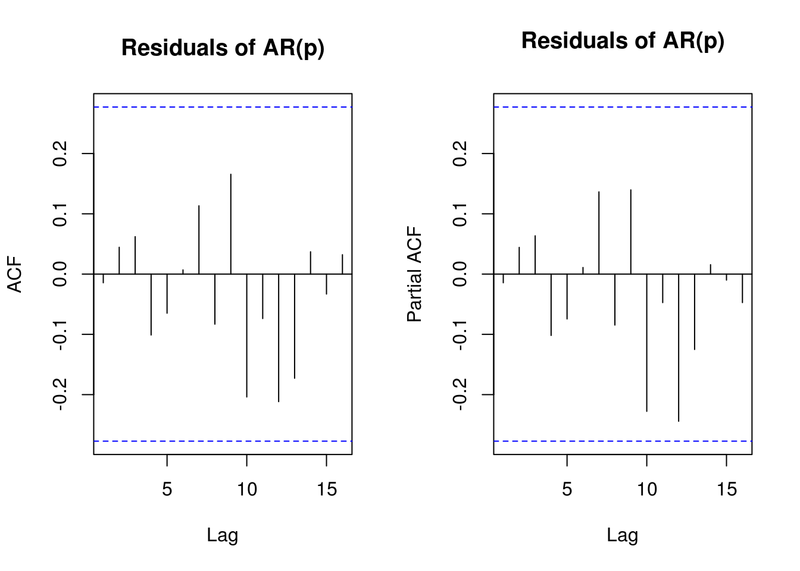
par(mfrow = c(1, 1))
# Coefficient estimated using an AR model
# Under H0, the drift is zero
ts_null <- Arima(lake.ts, order = c(p, 0, 0), include.mean = TRUE, include.drift = FALSE)
B <- 999
boot_res <- c(boot_stat(lake.ts), replicate(n = B, expr = Arima(arima.sim(model = list(ar = ts_null$model$phi,
order = c(p, 0, 0)), n = length(lake.ts), sd = sqrt(fit_lake$sigma2)) +
ts_null$coef["intercept"], order = c(p, 0, 0), include.mean = TRUE, include.drift = TRUE)$coef["drift"]))
# P-value
1 - rank(boot_res)[1]/(B + 1)drift
0.156 # Not statistically significant at level 5%, barely at 10%
hist(boot_res, breaks = 50, main = "Histogram of drift coefficient", xlab = expression(beta[1]))
abline(v = boot_res[1], col = 2)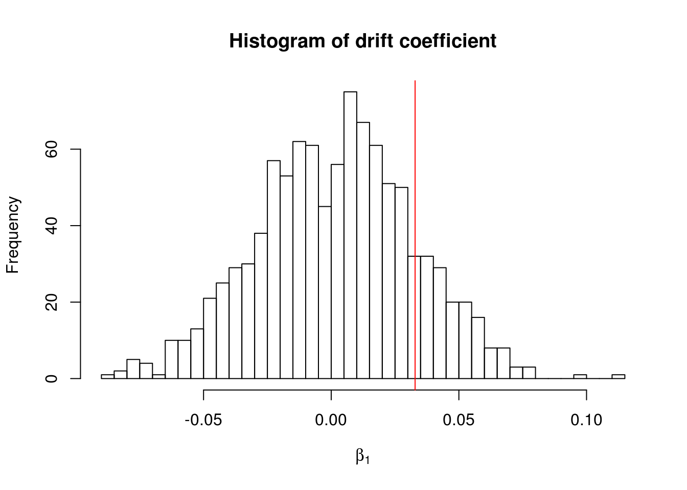
The test statistic for the Wald test is \((\hat{\beta}-\hat{\beta}_0)/\widehat{\mathrm{se}}(\hat{\beta})\), which is 2.150708. The latter follows a \(t\) distribution with \(n-k\) degrees of freedom under the null. If there is temporal dependence, we have less new units of information, since the data is autocorrelated.
The choice of the order for the AR(\(p\)) approximation in the AR-sieve bootstrap can be delicate, but AIC typically leads to adequate choices. Here, taking \(p=2\) seems sufficient.
# Licensed under the Creative Commons attribution-noncommercial license
# Adapted from work of Prof. Edward Ionides,
# https://ionides.github.io/531w16/notes05/notes5.html
library(lubridate)
library(forecast)
# Data from
# http://www.glerl.noaa.gov/data/dashboard/data/levels/mGauge/miHuronMog.csv
dat <- read.csv("http://sma.epfl.ch/~lbelzile/math342/huron_depth.csv", sep = ",",
header = TRUE, skip = 2)
dat$Date <- strptime(dat$Date, "%m/%d/%Y")
dat$year <- with(dat, year(Date))
dat$month <- with(dat, month(Date)) #as.numeric(format(dat$Date, format = '%m'))
## Subsample values to take only January data
dat <- subset(dat, month == 1)
huron_depth <- dat$Average
year <- dat$year
huron_arma21 <- Arima(huron_depth, order = c(2, 0, 1))
huron_arma20 <- Arima(huron_depth, order = c(2, 0, 0))
qqnorm(scale(resid(huron_arma20)))
abline(a = 0, b = 1)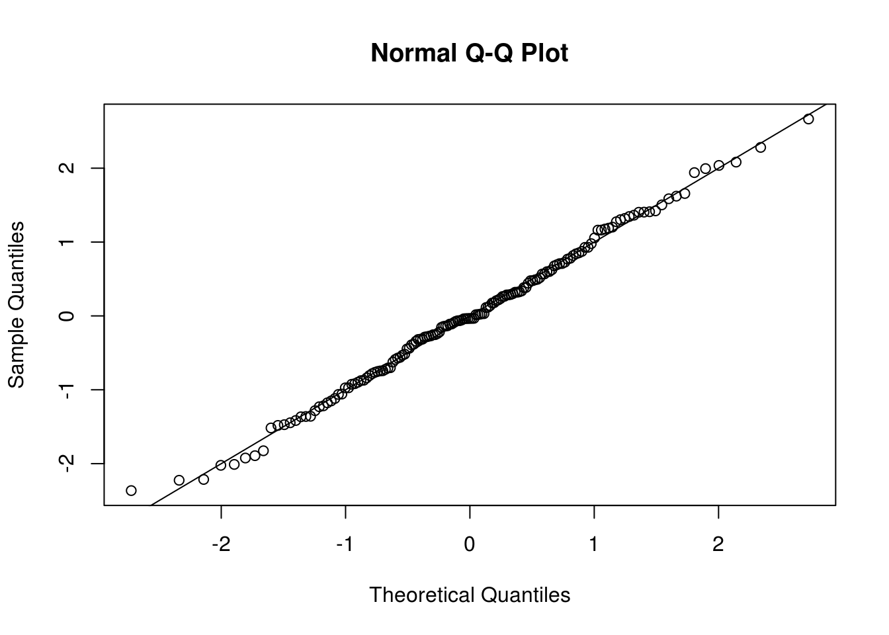
par(mfrow = c(1, 2))
TSA::acf(resid(huron_arma20), main = "Residuals")
pacf(resid(huron_arma20), main = "Residuals")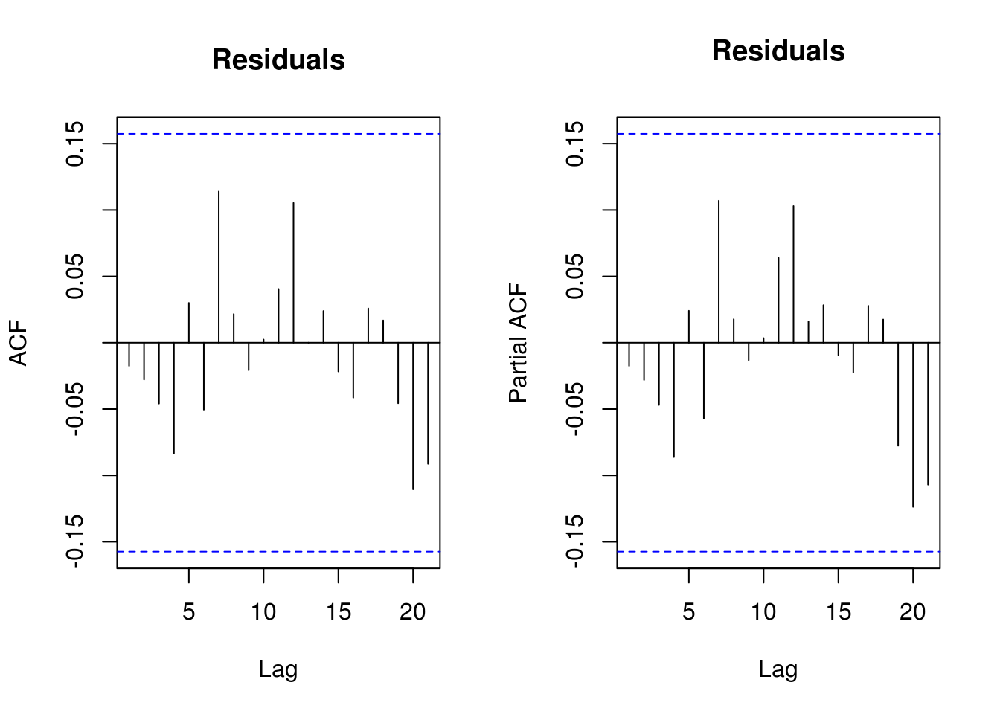
par(mfrow = c(1, 1))
set.seed(57892330)
B <- 1000
params <- coef(huron_arma20)
ar <- params[grep("^ar", names(params))]
ma <- params[grep("^ma", names(params))]
intercept <- params["intercept"]
sigma <- sqrt(huron_arma21$sigma2)
theta <- matrix(NA, nrow = B, ncol = length(coef(huron_arma21)), dimnames = list(NULL,
names(coef(huron_arma21))))
theta[1, ] <- huron_arma21$coef
for (b in 2:B) {
Y_b <- arima.sim(list(ar = ar, ma = ma), n = length(huron_depth), sd = sigma) +
intercept
theta[b, ] <- coef(Arima(Y_b, order = c(2, 0, 1), method = "ML", include.mean = TRUE,
include.drift = FALSE))
}
hist(theta[, "ma1"], freq = FALSE, breaks = 30, main = expression(Histogram ~
of ~ bootstrap ~ estimates ~ of ~ hat(theta)[1] ~ under ~ an ~ AR(2) ~ model),
xlab = expression(hat(theta)[1]))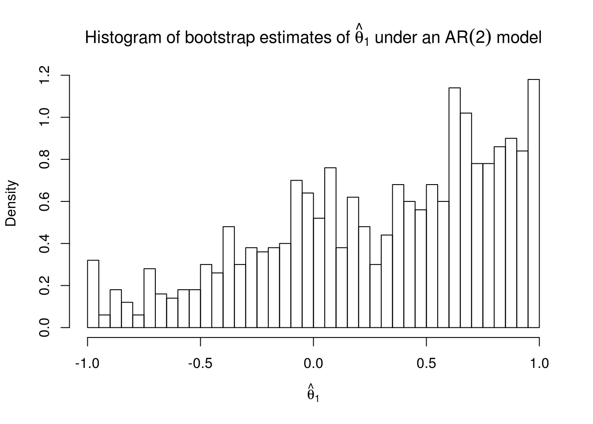
# P-value - here the result is a bit spurious because of potential ties
# since the distribution is discrete and there are ties
1 - rank(abs(theta[, 3]))[1]/B[1] 0.0253.5.3 Exercice 3: International Business Machines (IBM) stock
- Download the daily IBM stocks price from 2003 to 2010 (inclusively). Fit a GARCH(1,1) model with normal errors. Is the model satisfactory? Make sure to check that the GARCH process is not integrated. Does the process display excess kurtosis, relative to that of the normal distribution (for which \(\kappa=3\)).
- If the errors are not normally distributed, experiment with a heavy-tailed distribution. Assess the adequacy of the latter using a QQ-plot.
- If your returns are asymmetric, try a GARCH-type model that includes a leverage term. Is the fit better?
library(rugarch)
library(tseries)
ibm = get.hist.quote(instrument = "IBM", quote = "Adj", provider = c("yahoo"),
method = NULL, start = "2003-01-01", end = "2010-12-31", compression = "d",
retclass = c("zoo"), quiet = FALSE, drop = FALSE)time series starts 2003-01-02
time series ends 2010-12-30ibm_lret <- 100 * (log(as.vector(ibm[-1, ])) - log(as.vector(ibm[-length(ibm)])))
TSA::acf(I(residuals(lm(ibm_lret ~ 1))^2), main = "Squared residuals")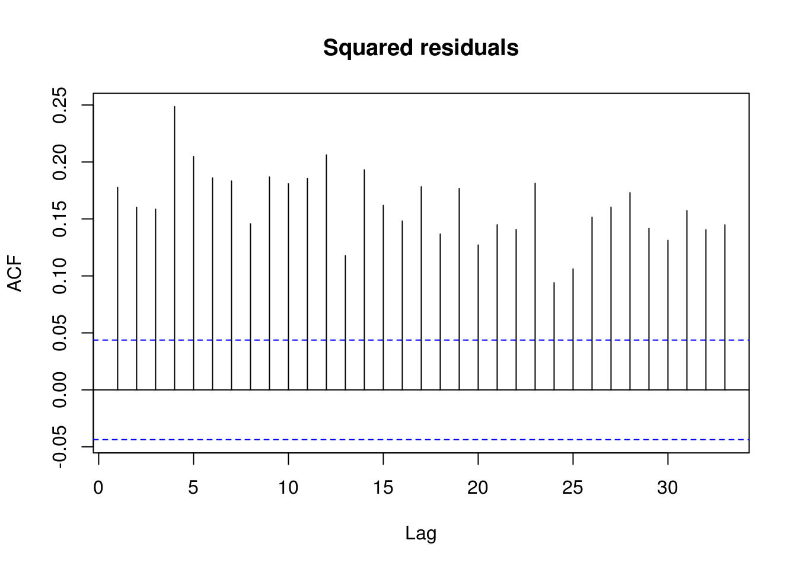
pacf(I(residuals(lm(ibm_lret ~ 1))^2), main = "Squared residuals")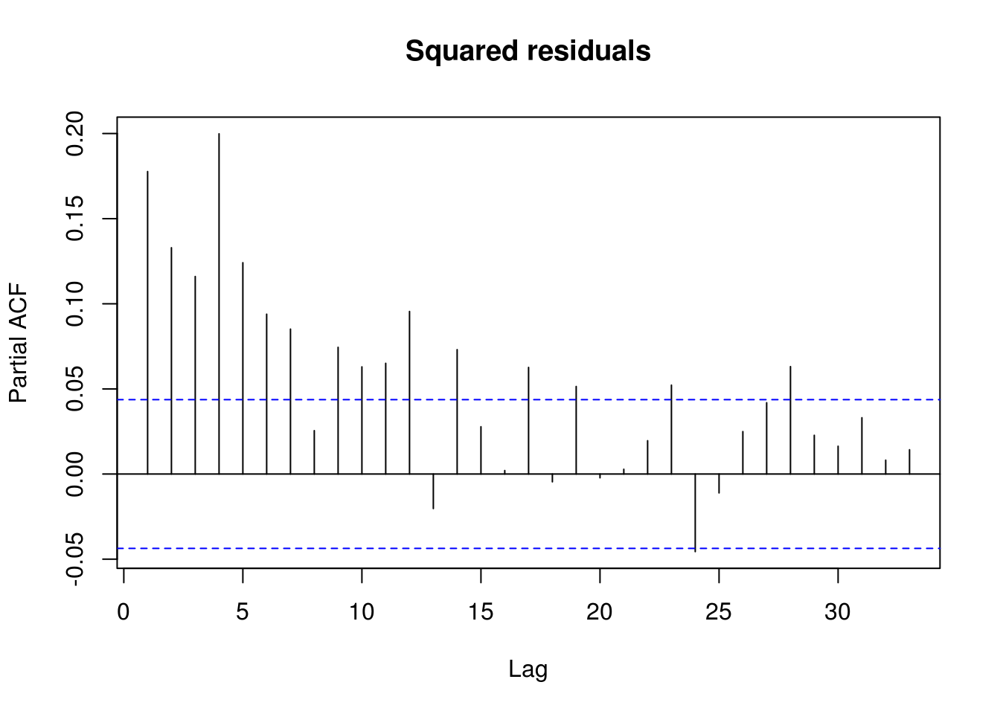
garch11_model <- ugarchspec(variance.model = list(model = "sGARCH", garchOrder = c(1,
1)), mean.model = list(include.mean = TRUE), distribution.model = "norm")
# Model fitting
garch11_fit <- ugarchfit(spec = garch11_model, data = ibm_lret, solver = "nloptr",
solver.control = list(solver = 9))
qqnorm(scale(residuals(garch11_fit)), pty = "s")
abline(a = 0, b = 1)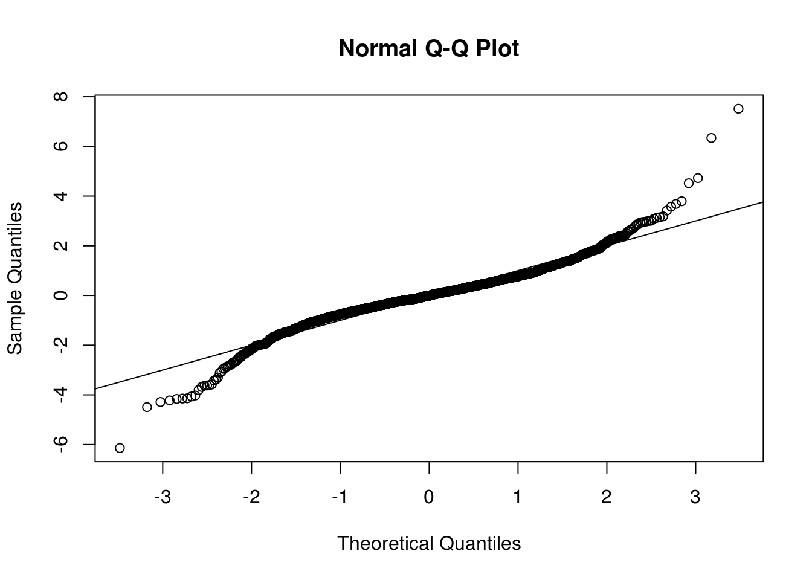
sres <- residuals(garch11_fit)/sigma(garch11_fit)
# residuals(garch11_fit, standardize = TRUE) sres^2 is equivalent to
# residuals(garch11_fit)^2/garch11_fit@fit$var
TSA::acf(sres^2, main = "Squared residuals of GARCH(1,1) model")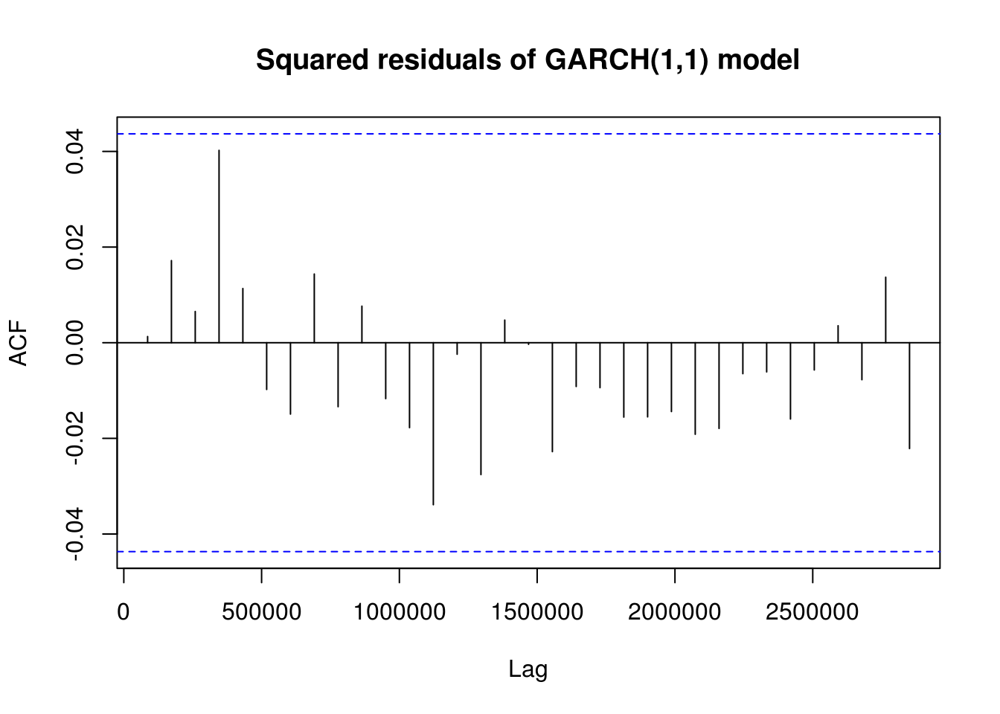
pacf(sres^2, main = "Squared residuals of GARCH(1,1) model")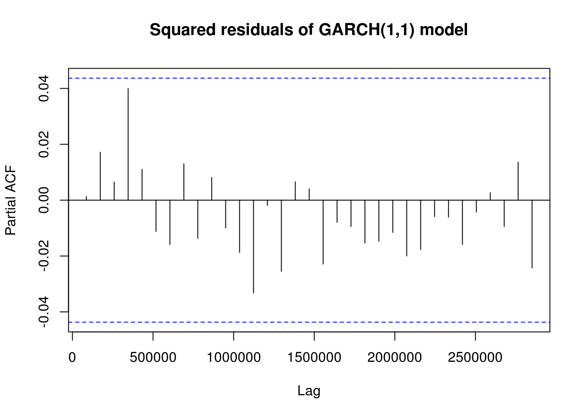
# Parameters of the GARCH(1,1)
alpha1 <- garch11_fit@model$pars["alpha1", 1]
beta1 <- garch11_fit@model$pars["beta1", 1]If one calls print(garch11_fit), we immediatly see that we have an IGARCH as \(\alpha_1+\beta_1=1\). The fact that \(\beta_1\) is close to one is typical of heavy-tailed financial returns. The kurtosis is \(\kappa = 3(1+\alpha_1+\beta_1)(1-\alpha_1-\beta_1)/(1-\beta_1^2-2\alpha_1\beta_1-3\alpha_1^2)\) if \(3\alpha_1^2+2\alpha_1\beta_1+\beta_1^2<1\), provided the fourth moment exist (when \(0 \leq \alpha_1+\beta_1 <1\)). A shock at one time becomes permanent, the conditional variance is not stationary. We attempt to fit a different model, a GARCH(\(a, b\)). We need \(\alpha_1+ \cdots + \alpha_a+\beta_1+ \cdots + \beta_b<1\) for stationarity.
library(rugarch)
# Higher order needed (?), also more heavy-tailed innovations
garch21_model <- ugarchspec(variance.model = list(model = "sGARCH", garchOrder = c(2,
1)), mean.model = list(include.mean = TRUE), distribution.model = "std")
garch21_fit <- ugarchfit(spec = garch21_model, data = ibm_lret, solver = "nloptr",
solver.control = list(solver = 9))
# Is the conditional variance model stationary?
garch21_fit@model$pars["alpha1", 1] + garch21_fit@model$pars["alpha2", 1] +
garch21_fit@model$pars["beta1", 1][1] 0.9932767# Yes
plot(garch21_fit, which = 9)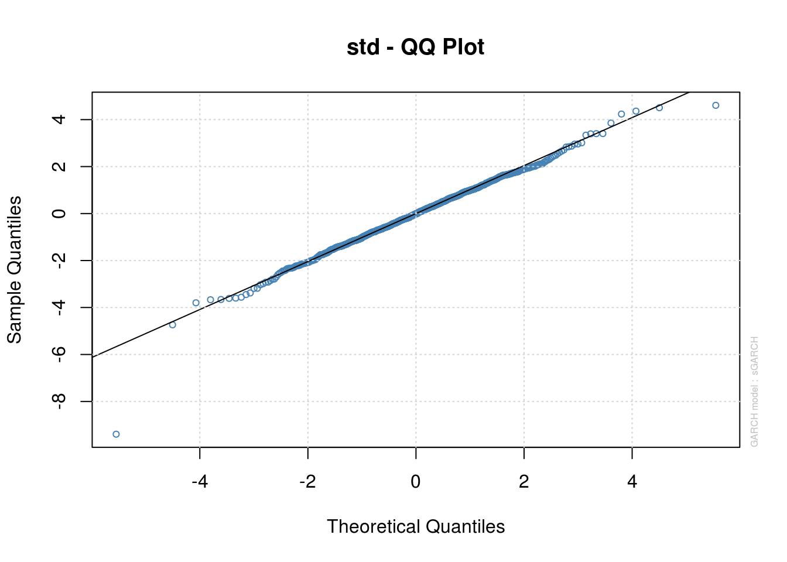
plot(garch21_fit, which = 11)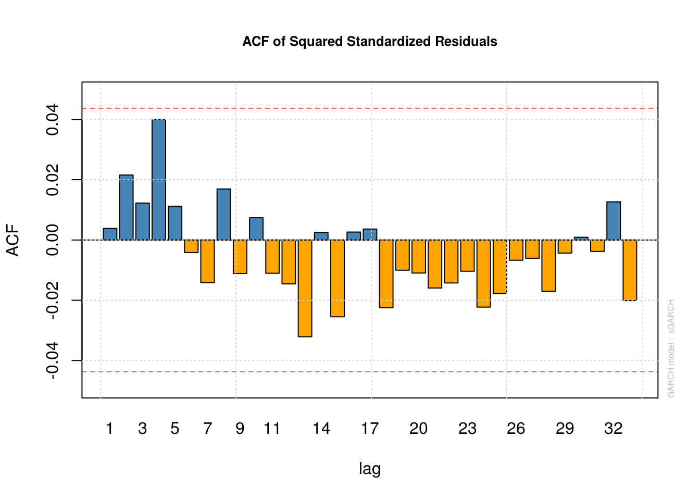
# TSA::acf(c((residuals(garch21_fit)/sigma(garch21_fit))^2), main = 'Scaled
# residuals') pacf(c((residuals(garch21_fit)/sigma(garch21_fit))^2), main =
# 'Scaled residuals')
gjrgarch_model <- ugarchspec(variance.model = list(model = "gjrGARCH", garchOrder = c(1,
1)), mean.model = list(include.mean = TRUE), distribution.model = "std")
gjrgarch_fit <- ugarchfit(spec = gjrgarch_model, data = ibm_lret, solver = "nloptr",
solver.control = list(solver = 9))
# Not much improvement (if any) - may be visible however in the VaR
# forecasts left as an exercice!